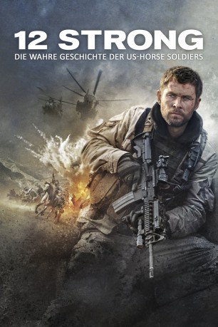
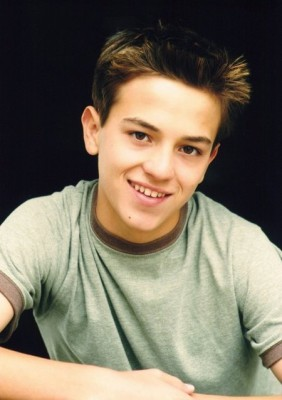

#9052 Operation: 12 Strong
Alternativ: 12 Strong
 
 IMDB-Wertung: 6.6 / 10
IMDB-Wertung: 6.6 / 10  Metascore: 54
Metascore: 54 
Operation: 12 Strong handelt von einer kleinen militärischen Sondereinheit um Captain Mitch Nelson (Chris Hemsworth), die kurz nach den Anschlägen vom 11. September auf geheimer Mission in Afghanistan unterwegs ist. Auf Pferden reiten die zwölf Special-Forces-Soldaten in den Krieg gegen die zahlenmäßig überlegenen Taliban, schaffen es aber dennoch, dank militärischer Erfahrung, der Zusammenarbeit mit einem afghanischen Kriegsherrn und strategischem Geschick den Feind zurückzudrängen. Ihr Einsatz läuft solange wie geplant, bis sie in einen Hinterhalt geraten und plötzlich in einer Festung festsitzen. Für die in der Heimat zurückgelassenen Ehefrauen wächst die Sorge um eine Rückkehr ihrer in dem fernen Land ums Überleben kämpfenden Männer derweil ins Unermessliche.
Jahr: 2018
Dauer: 130 Minuten
FSK: 16
Land: USA Studio: Warner Bros.Tonspuren: DTS - ,
Untertitel: Deutsch, Englisch,
Auflösung: 1080p (1920x808) Größe: 11059 MB
Genre: Action, Drama, Krieg, Geschichte
Regisseur: Nicolai Fuglsig
Drehbuch: Ted Tally
Soundtrack: Lorne Balfe
Darsteller:
 Chris Hemsworth als Captain Mitch Nelson
Chris Hemsworth als Captain Mitch Nelson Michael Shannon als Hal Spencer
Michael Shannon als Hal Spencer Michael Peña als Sam Diller
Michael Peña als Sam Diller Navid Negahban als Gen. Dostum
Navid Negahban als Gen. Dostum Trevante Rhodes als Ben Milo
Trevante Rhodes als Ben Milo Geoff Stults als Sean Coffers
Geoff Stults als Sean Coffers- Thad Luckinbill als Vern Michaels
- Austin Hébert als Pat Essex
 Austin Stowell als Fred Falls
Austin Stowell als Fred Falls Ben O'Toole als Scott Black
Ben O'Toole als Scott Black Kenneth Miller als Kevin Jackson
Kenneth Miller als Kevin Jackson Kenny Sheard als Bill Bennett
Kenny Sheard als Bill Bennett Jack Kesy als Charles Jones
Jack Kesy als Charles Jones Rob Riggle als Lt. Col. Bowers
Rob Riggle als Lt. Col. Bowers William Fichtner als Colonel Mulholland
William Fichtner als Colonel Mulholland- Arshia Mandavi als Najeeb
 Elsa Pataky als Jean Nelson
Elsa Pataky als Jean Nelson- Marie Wagenman als Maddy Nelson
- Allison King als Marsha Spencer
- Lauren Myers als Lisa Diller
- Laith Nakli als Commander Ahmed Lal
 Fahim Fazli als Khaled
Fahim Fazli als Khaled Numan Acar als Mullah Razzan
Numan Acar als Mullah Razzan- Peter Malek Karas als Habib
- Matthew Van Wettering als Desk Sergeant
-  Seth Adkins als Josh - Young Soldier
- Taylor Sheridan als Brian
- Vincent E. McDaniel als Soldier
 Yousuf Azami als Fakir
Yousuf Azami als Fakir- Veronica Diaz Carranza als Lt. Henriques
- Shvan Aladdin als Taliban Fighter #1
 Mustafa Haidari als Taliban Fighter #2
Mustafa Haidari als Taliban Fighter #2- Ali Olomi als Afghan Man
- Yasmine Aker als Afghan Woman Teacher
- Massa Daoud als Crying Afghan Girl #2
- Madeleine Albright als Herself (archive footage) (uncredited)
- Tim Aydelott als Special Forces First Sergeant (uncredited)
- Osama bin Laden als Himself (archive footage) (uncredited)
- Edward Butron als Taliban / New Alliance (uncredited)
 Bill Clinton als Himself (archive footage) (uncredited)
Bill Clinton als Himself (archive footage) (uncredited)- Perla Daoud als Afghani Girl (uncredited)
- Jason Exum als Admin 2nd Lieutenant (uncredited)
- Lawrence Gilligan als Taliban Soldier (uncredited)
 Kevin Kent als 555 Soldier (uncredited)
Kevin Kent als 555 Soldier (uncredited) Martin Palmer als Northern Alliance Soldier (uncredited)
Martin Palmer als Northern Alliance Soldier (uncredited)- Christian Pedersen als Special Forces Soldier (uncredited)
- Benjamin Poe als Special Forces Captain (uncredited)
 Frank Powers als Special Forces Civilian (uncredited)
Frank Powers als Special Forces Civilian (uncredited)- Vladimir Putin als Himself (archive footage) (uncredited)
- Donald Rumsfeld als Himself (archive footage) (uncredited)
Datei: X:\2018(N-Z)\Operation 12 Strong (2018, FSK16, 1920x808).mkv seit 19.07.2018
Festplatte: HD 2018(G-Z)-2019(A-Z)
 Es gibt insgesamt 172 Filme in der Gruppe '2018(N-Z)'
Es gibt insgesamt 172 Filme in der Gruppe '2018(N-Z)'